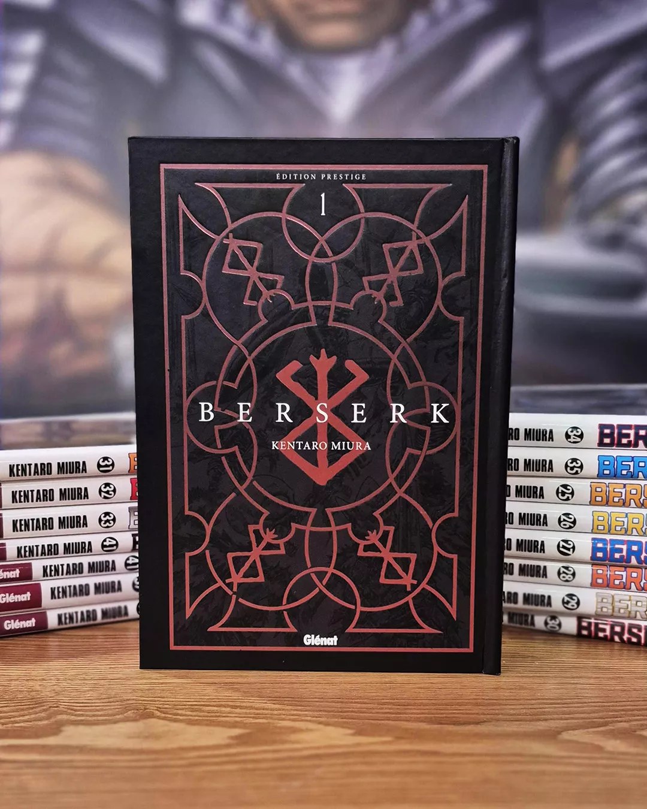
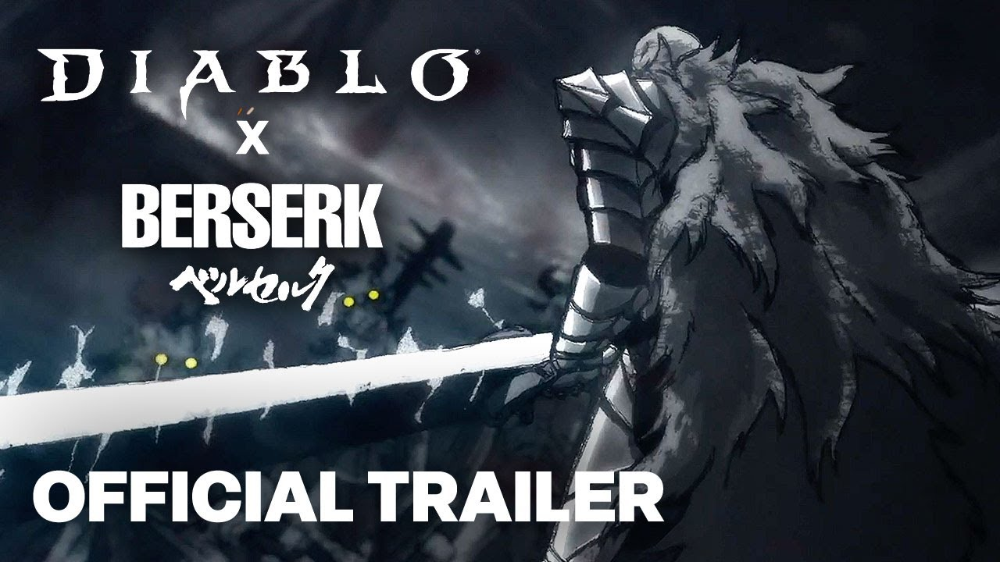

Vidéo du jour
The Great Berserk Exhibition Interview with Dr. Kentaro Miura
Berserk - The flower is birth
Nouveauté
L'édition prestige de Berserk se dévoile
- 
-
Comme vous le savez déjà via cette précédente news, le manga culte Berserk du regretté Kentaro Miura va revenir aux éditions Glénat à partir du mois de juin, dans une alléchante édition prestige. Et à quelques semaines de ce lancement-événement, l'éditeur en a dévoilé plus sur le contenu de cette édition, avec des images à l'appui !Nous aurons donc droit à des tomes doubles en grand format de 188x264mm (soit le même format que l'édition collector du tome 41), avec des couvertures rigides, des pages couleurs exclusives qui étaient jusqu'à présent uniquement disponibles dans les archives de l'éditeur japonais, les illustrations des couvertures de l'édition classique incluses dans les livres, une traduction et un lettrage revus, un jaspage, et un foil ainsi qu'un marquage sur les couvertures. Les deux premiers volumes sont prévus en librairies le 4 juin, au prix de 24,90€ chacun. Par la suite, l'éditeur prévoit de publier trois nouveaux tomes de cette édition par an.
-
Diablo IV : présentation de la prochaine Saison + infos concernant le deal avec Berserk
-

Enfin, un mot sur la fameuse collaboration avec la prestigieuse franchise Berserk du regretté Kentaro Miura, dont l'event débutera le 6 mai pour gratter quelques cosmétiques. Malheureusement tout comme Fortnite, le plus intéressant passera par la boutique payante : l'armure de Guts mode Berserker (classe barbare), celle de Griffith (classe voleur) et même le Chevalier Squelette (classe nécromancien).